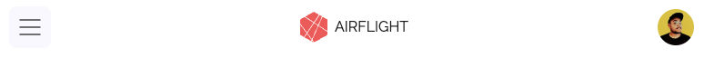
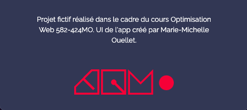
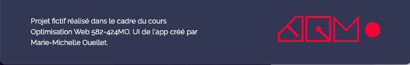

Requis individuel pour l'appli
NavBar
Aperçu du résultat pour la navBar👇

Dans ta page HTML, ajoute dans le head, une balise meta robots dans laquelle tu vas spécifier que les moteurs de recherche existants (Bing ,Google etc) ne doivent pas indexer, ni suivre ta page Web (afin d'éviter que ton faux site d'app de festival se retrouve sur Google et confonde les gens), plus d'info sur cette balise ici ou alors tu peux Googler sur le sujet pour mieux comprendre à quoi ça sert.
Toujours dans ta page HTML, tu dois créer un header, main et footer.
Dans header, tu dois ajouter une navBar Bootstrap. Celle-ci doit avoir un thème de couleur et une couleur de fond.
La navbar doit prendre une largeur complète de l'écran de sorte que son fond de couleur doit créer une ligne qui remplit la largeur de la fenêtre du navigateur. Cependant le contenu à l'intérieur de la navbar doit-être dans un conteneur Bootstrap qui permet de s'étaler sur la largeur de la page (bref pas de largeur maximum).
Comme nous sommes dans une app navbar ne doit jamais afficher une barre de navigation complète, elle sera toujours cachée dernière un menu Hamburger ☰.
À ta navbar, ajoute ton logo. Ce logo doit-être cliquable pour ramener au haut de la page. Ce logo doit contenir à la fois une image (svg ou png) ainsi que le nom du festival en texte. Ce logo doit être centré dans la navBar.
À ta navbar, ajoute une liste de liens: Accueil, Programmation, Oeuvres, Présentation des artistes, Amis sur carte interactive. Pour le moment ces liens peuvent pointer vers un #.
À ta navBar, ajoute une photo de profil de la personne qui est connectée à l'appli. Cette photo peut-être stylisée comme vous le voulez (ronde, carré etc), elle doit se placer à droite de la navBar.
La navbar doit être toujours figée en haut de la page, peut-importe le défilement.
Notes de cours 📚
NavBar
La barre de navigation Bootstrap
Pied de page
Aperçu du résultat pour le pied de page👇
Défaut

À partir de
SM

Le pied de page doit se démarquer du contenu principal du site en ayant une couleur de fond le différenciant, une marge intérieure d'au moins 1rem afin que son contenu ne touche pas ses extrémités et finalement une marge extérieure verticale de 1rem vers le haut ⬆️ afin que celui-ci ne touche pas au contenu le précédent dans la page. Tu dois utiliser la classes utilitaires Bootstrap pour créer des espacements.
Un conteneur Bootstrap doit être utilisé afin de gérer le positionnement des éléments à l'intérieur de celui-ci, ce conteneur doit être celui qui n'a pas de largeur maximum.
À partir du breakpoint sm, affichez le texte à gauche du logo.
À partir du breakpoint sm, le texte de gauche doit s'aligner à gauche, et le logo doit maintenant s'aligner à droite.
Vous pouvez utiliser ce url pour le logo: https://tim-montmorency.com/timdoc/shared/images/logo-tim.svg
Au besoin, ajoutez des classes d'espacement Bootstrap pour aligner les éléments un peu comme l'aperçu ci-haut.
Formulaire de recherche et liste de filtres
Aperçu du résultat pour le pied de page👇
 Dans main, sous la navbar, crée-toi un conteneur bootstrap.
Dans ce conteneur, crée-toi 2 sections avec la balise sémantique la plus appropriée, les deux sections seront des rangées Bootstrap.
Va voir la documentation sur les icônes Bootstrap et installe le paquet d'icône via CDN, soit avec la balise link ou via @import dans le css, à ta guise.
Dans la première section, crée-toi un formulaire qui contiendra un champ de recherche. Va voir la documentation Boostrap sur les formulaires afin d'utiliser les classes appropriées.
Dans le champ recheche, le placeholder sera "Rechercher une oeuvre, un artiste..."
Stylise ton champ comme tu veux, par contre je veux que tu ajoutes l'icône de la loupe au début du champ de recherche. Utilise le format "Icon font" pour ajouter l'icône Boostrap avec la loupe.
Dans la 2e section, crée-toi un div qui aura un overflow caché. Dans ce div, crée-toi une liste ul li de boutons (utilise les boutons de Bootstrap).
Stylise cette liste afin qu'elle n'ait pas de puce et que les boutons s'affichent tous sur une même ligne.
Re-stylise des boutons, au besoin, dans ton fichier CSS.
Le format "icon font" est le suivant: <i class="bi-alarm"></i>.
Dans main, sous la navbar, crée-toi un conteneur bootstrap.
Dans ce conteneur, crée-toi 2 sections avec la balise sémantique la plus appropriée, les deux sections seront des rangées Bootstrap.
Va voir la documentation sur les icônes Bootstrap et installe le paquet d'icône via CDN, soit avec la balise link ou via @import dans le css, à ta guise.
Dans la première section, crée-toi un formulaire qui contiendra un champ de recherche. Va voir la documentation Boostrap sur les formulaires afin d'utiliser les classes appropriées.
Dans le champ recheche, le placeholder sera "Rechercher une oeuvre, un artiste..."
Stylise ton champ comme tu veux, par contre je veux que tu ajoutes l'icône de la loupe au début du champ de recherche. Utilise le format "Icon font" pour ajouter l'icône Boostrap avec la loupe.
Dans la 2e section, crée-toi un div qui aura un overflow caché. Dans ce div, crée-toi une liste ul li de boutons (utilise les boutons de Bootstrap).
Stylise cette liste afin qu'elle n'ait pas de puce et que les boutons s'affichent tous sur une même ligne.
Re-stylise des boutons, au besoin, dans ton fichier CSS.
Le format "icon font" est le suivant: <i class="bi-alarm"></i>.
Voir la documentation sur les icônes Bootstrap pour en savoir plus.
Remise de P1.2
Une fois tout complété, créez vous une branche git nommée P1-2 et publiez cette branche sur github.
Après la remise, vous ne touchez plus à cette branche. Vous devrez continuer sur la branche main et la branche P1-2 demeurera telle qu'elle afin que je puisse y faire ma correction. Les propchaines remises seront toujours sur des branches distinctes.